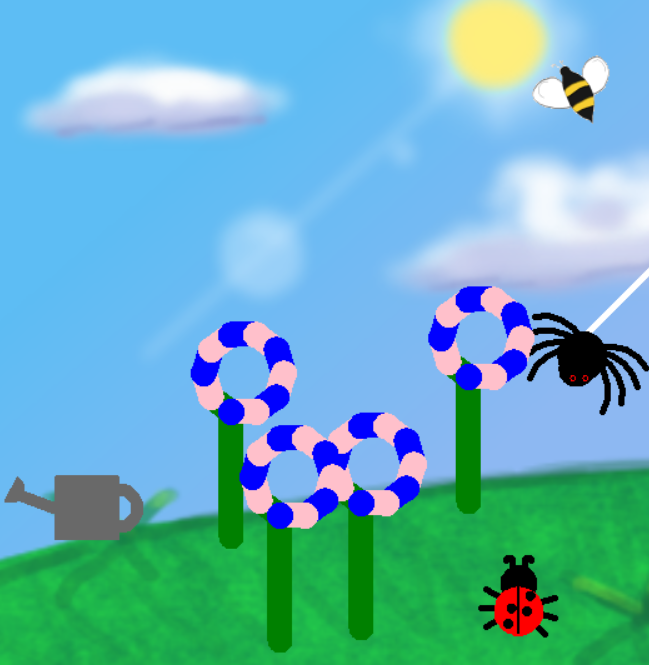
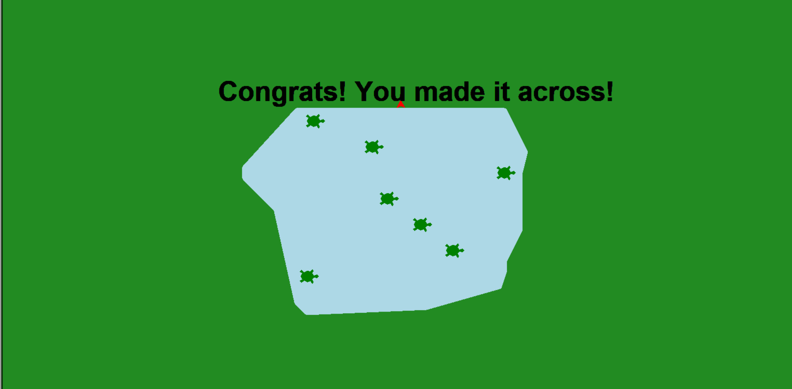
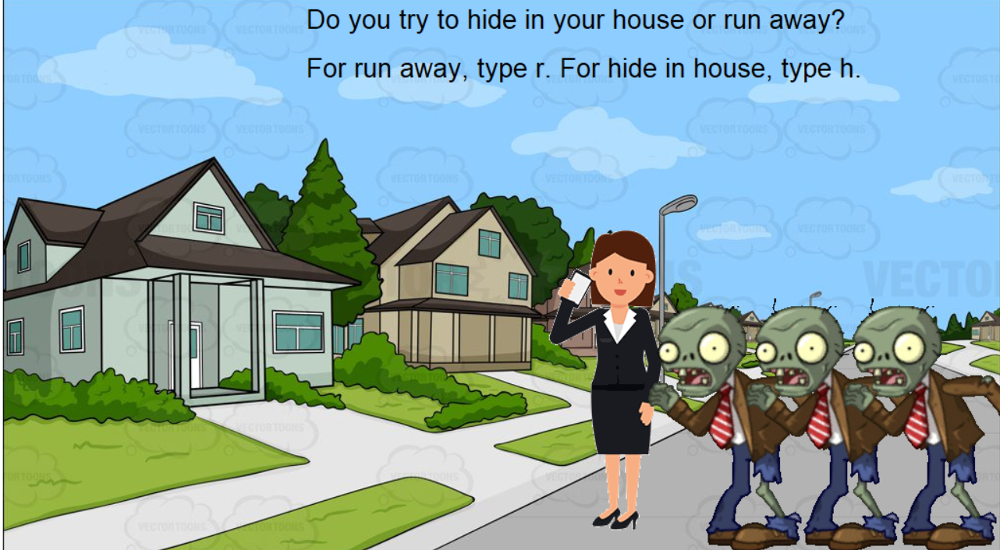
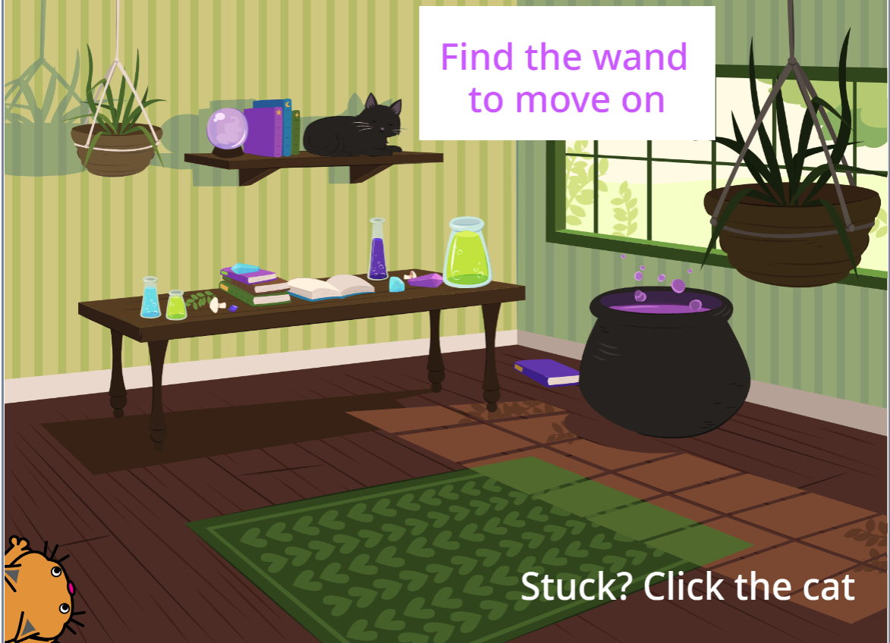

Here, you can find all of my wonderful projects I have created.
Grow Your Own Garden

Our 1.1.9 project features multiple bugs, a watering can, and flowers to illustrate our knowledge of turtle. The spider, ladybug, and watering can are stationary. The bee moves back and forth across the top of the screen. To grow your garden, you can click anywhere on the screen and a flower will grow.
Cross the Lake

In our 1.2.5 project, a racer tries to cross the lake full of turtles. The turtles move across the lake at various speeds. If the racer hits the turtle, the racer resets. Once the racer crossers the river, the game is over, and the top displays "Congrats! You made it across!"
Zombie Apocalypse: Interactive Story

Our 1.3.1 is an interactive story about a zombie apocalypse. As zombies appear, you have to make choices to try to survive, such as hiding in a house or running away. As the story progresses, you go on a supply run and have to make more choices that determine the outcome of the story. Your goal is to survive the night.
Escape room

https://scratch.mit.edu/projects/526036351/
My group used scratch to create an escape room. As you go through the rooms, you have to click on various objects and play mini games in order to move on to the next room. In each room, you are working to find the key that allows you to move to the next room. When you finally make it outside, you get to look at the stars.